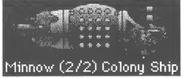
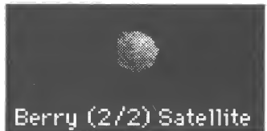
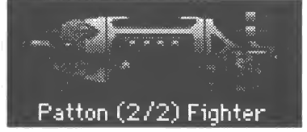

Gemiler
Gemiler yeni yıldızları keşfetmek, kolonilerini savunmak ve yeni gezegenleri kolonileştirmek için kullandığın şeylerdir. Birkaç farklı türde gemi vardır ve kendi gemilerini de yaratabilirsin.
Spaceward Ho! gemileri inanılmaz derecede büyük ve pahalıdır. Örneğin ilk Koloni Gemin, gezegeninin bütün kaynaklarının neredeyse üçte birini, üstüne de gezegenin otuz yıllık bütün sanayi üretimini yutar. Koca bir gemi.
Gemi Yapmak
Kolonilerinin herhangi birinde gemi yapabilirsin. Bunun için gemi yapmak istediğin gezegene tıkla ve “Gemiler” menüsünden “Gemi Yap/Tasarla...” komutunu seç ya da gezegene çift tıkla. Büyük bir iletişim kutusu açılır. Bu iletişim kutusunda hem gemi yapabilir hem de yeni gemi tipleri tasarlayabilirsin.
İletişim kutusunun sol yanında kullanılabilir gemi tiplerinin bir listesi var. Bunlar zevkine uymuyorsa sağ alttaki kaydırma çubuklarıyla oynayarak yeni bir sınıf tasarlayabilirsin.
Gemileri Hareket Ettirmek
Bir filoyu hareket ettirmek için bulunduğu gezegenden gitmesini istediğin yere tıklayıp sürüklemen yeter. Ulaşabiliyorsan, filonun izleyeceği rota boyunca uzanan bir ok görürsün. Fareyi bıraktığında rotanın belirlendiğini bildiren bir “Hyahh!” sesi duyarsın. Sırayı bitirdiğinde gemi yoluna koyulur.
Filo sürüklediğin yıldıza ulaşamıyorsa yol kesik kesik gri bir çizgiyle gösterilir. Filonun seçtiğin yıldıza gidip geri dönecek kadar yakıtı varsa yol çift uçlu bir ok olur.
Bir filoyu yerinde tutmak ya da hareketini iptal etmek için filonun gezegenine tıkla ve bir saniye basılı tut. Doğru yaptıysan, fareyi bıraktığında bir “Whoa!” sesi duyarsın.
Bir gezegende birden çok filon varsa, Bütçe Bilgileri’nde filonun adına tıklayarak hareket ettirilecek filoyu seçebilirsin. Bir filonun gideceği bir yer varsa ve sırayı bitirdiğinde hareket edecekse, bunu sana bildirmek için filonun adı kalın yazılır. TAB tuşuna basmak o gezegendeki bir sonraki filoyu kendiliğinden seçer.
Bir filo, senin ya da müttefiklerinin sahip olduğu bir gezegene her gittiğinde kendiliğinden yakıt alır. Bir filonun ayrılmaya yetecek yakıtı yoksa, o gezegene bir Koloni Gemisi gönderip gezegeni bir sıralığına kolonileştirebilir, sonra herkesi oradan ayırabilirsin. Yani bir Koloni Gemisi aynı zamanda Tanker Gemisi işi de görür.
Bir filonun rotası gezegenlerin arasındayken değiştirilemez: hiperuzayda geri dönüş yoktur.
Filoları Düzenlemek
Bazen bir filoyu parçalara bölmek ya da birkaç filoyu bir araya getirmek isteyebilirsin. Bunun için “Gemiler” menüsünden “Filoları Hazırla...” komutunu seç. Sonra gemileri istediğin gibi dağılana kadar tıklayıp sürükle. Kusura bakma, bir filoda yalnızca aynı tipte gemiler olabilir (dosya boyutunu küçültmek için).
Filoları ve Gemileri Hurdaya Çıkarmak
Oyun ilerledikçe metâlin kıt olduğunu ve eskimiş gemilerinin neredeyse işe yaramadığını görürsün. Eski teknelerinin bazılarından kurtulmak isteyebilirsin. Kolonilerinden birindeki bir filoyu hurdaya çıkararak metâlinin %75’ini geri kazanabilirsin (“Gemiler” menüsünden “Filoyu Parçala” komutunu seç). Ya da bütün bir gemi tipini hurdaya çıkarabilirsin (“Gemiler...” iletişim kutusunda belirli bir tip için “Bu tipi hurdaya çıkar” düğmesine tıkla).
Bir gemi tipini ya da filoyu hurdaya çıkarılmak üzere işaretlediğinde, sırayı bitirene kadar hurdaya çıkarılmaz. O zamana kadar caydıysan, “Gemiler...” iletişim kutusundaki “Tipi Hurdaya Çıkarma” düğmesine basman ya da “Gemiler” menüsünden “Filoyu Parçalama” komutunu seçmen yeter.
Bir filonun yalnızca bir bölümünü hurdaya çıkarmak istiyorsan, filoyu saklamak istediklerinle hurdaya çıkarmak istediklerine ayırmak için “Filoları Hazırla...” iletişim kutusunu kullan.
Gemileri hurdaya çıkardığında, bir koloninin üstündelerse metâl anında genel stokuna geçer ve onu hemen kullanabilirsin. Gemilerin üstünde bulunduğu gezegen senin değilse, metâl gezegenin üstüne düşer. Orayı kolonileştiren bir sonraki kişi, hurdaya çıkardığın gemilerin metâlini oradan çıkarabilir.
Gemi Tasarlamak
Bu, belki de oyunun en havalı bölümüdür. Teknolojin ilerledikçe, bu yeni teknolojileri kullanan daha gelişmiş gemiler yapmaya başlamak isteyeceksin. Kolaydır. “Gemi Yap/Tasarla...” iletişim kutusunda teknoloji düzeylerini yeni tipinin olmasını istediğin gibi ayarla. Yeni geminin özelliklerini ayarlamak için kaydırma çubuklarını oynatman yeter. (Kaydırma çubuğunun en sağı her zaman o anki Teknoloji düzeyindir.) Gemin istediğin gibi olunca bir tane yap (“+” düğmesine basarak); prototip kendiliğinden tasarlanıp yapılır.
Dört ana gemi sınıfı vardır: Koloni Gemileri, Uydular, İzciler ve Savaşcılar.
Koloni Gemileri

Koloni gemileri insan taşır ve senin için yeni yıldızları kolonileştirir. Koloni Gemileri hem Para hem de Metâl olarak inanılmaz derecede pahalıdır. Koloni Gemileri o kadar pahalıdır ki yalnızca birkaç tane yapmak isteyeceksin. Bu yüzden ve minyatürleştirme onlara pek yarar sağlamadığı için Koloni Gemilerinde büyük olasılıkla hiç Mini kullanmak istemeyeceksin. Koloni Gemileri düşmanın bir savaşta ilk ateş edeceği şeydir de, bu yüzden onlara da dikkat etmek isteyeceksin.
Uydular

Uydular motoru olmayan gemilerdir. Yani Menzilleri sıfırdır. Uydular gezegenlerini düşman saldırısına karşı savunmanın ucuz, etkili bir yoludur. Ne yazık ki hareket edemezler; yalnızca yapıldıkları gezegeni savunabilirler. Uydular normal gemilerden çok daha küçüktür, bu yüzden onları yok etmek o kadar çok atış gerektirmez. Tabii ki Uydu yapmak da Savaşcı yapmak kadar metâl gerektirmez.
Bir gezegende Uydular varsa, Yıldız Haritası’nda çevresinde bir halka olur.
İzciler ve Savaşcılar

İzciler ve Savaşcılar temel gemilerindir. İzcilerle savaşcılar arasındaki fark, Motorlar ile Silâhlar arasında bir değiş tokuştur. İzcilerin Menzili, Menzil Teknolojinden iki birim yüksek olabilir. Ne yazık ki en yüksek Silâh ve Kalkan Teknolojileri o anki düzeylerinden bir düşüktür. Bu da İzcileri keşif için biçilmiş kaftan yapar, ama savaşta pek iyi değildirler.
Spaceward Ho! her İzciyi kendiliğinden kendi filosuna koyar, böylece tek başına keşfe uçabilir. Savaşcılar kendiliğinden tek bir grupta toplanır.
Geliştirme Maliyeti
Yeni bir gemi tipinin prototipini yapmak ondan sonra gelenleri yapmaktan daha pahalıdır: aksaklıkları gidermek ve testleri yapmak emek ister. Bu özellikle minyatürleştirmesi yüksek gemiler için geçerlidir. Geliştirme maliyetinin her yeni gemi tipine bağlı tek seferlik bir şey olduğunu aklında tut.
Delta Tao kılavuzunun yeniden yapım tarafından yapılmış, resmî olmayan Türkçe çevirisi. İngilizce sayfa.